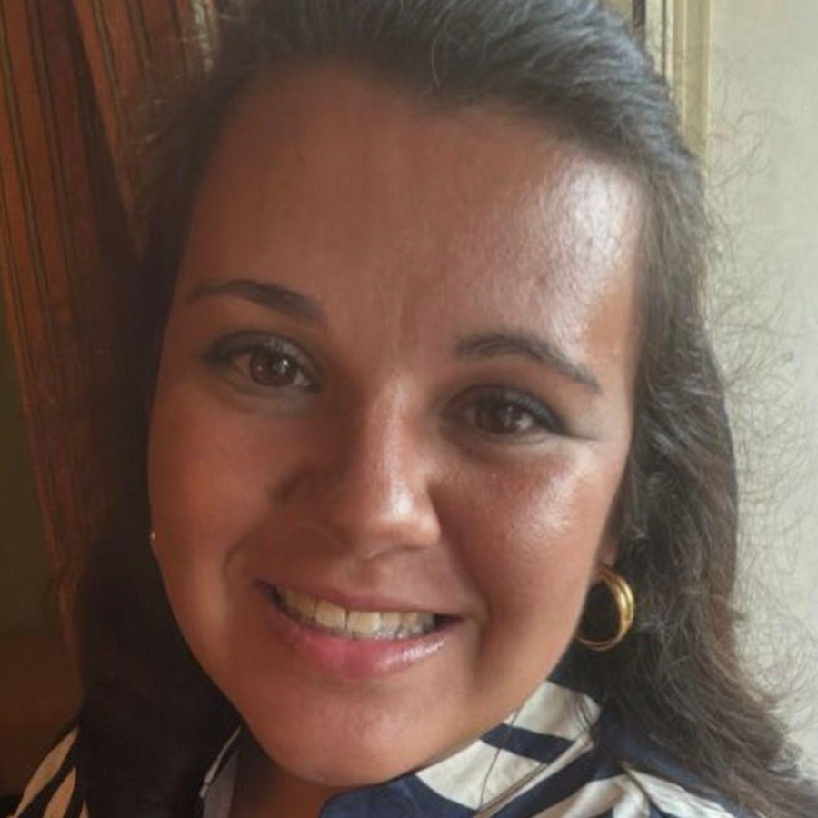
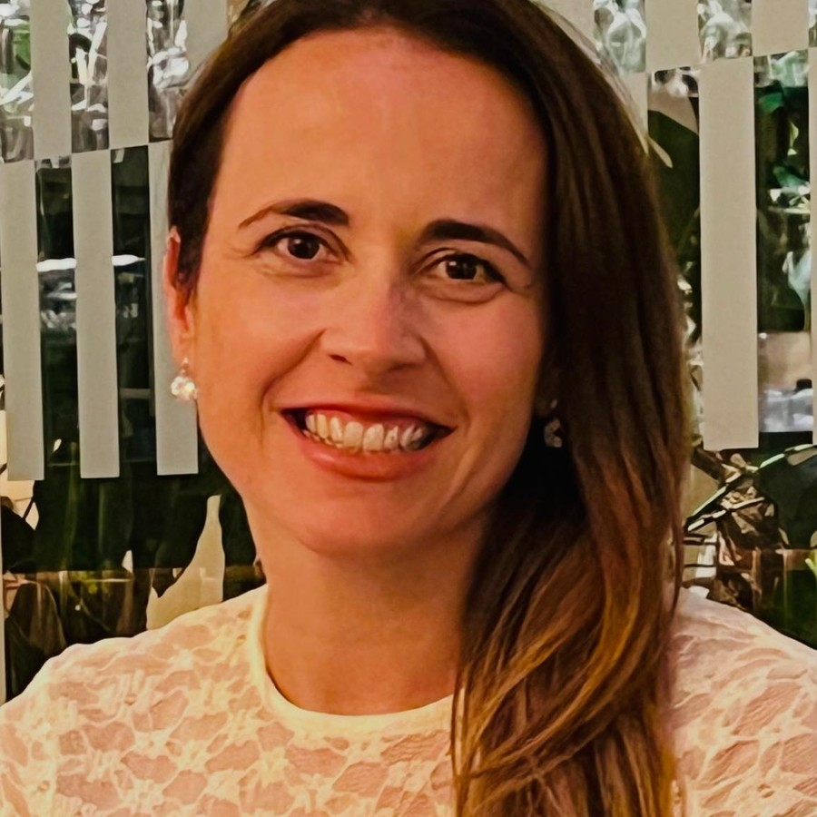
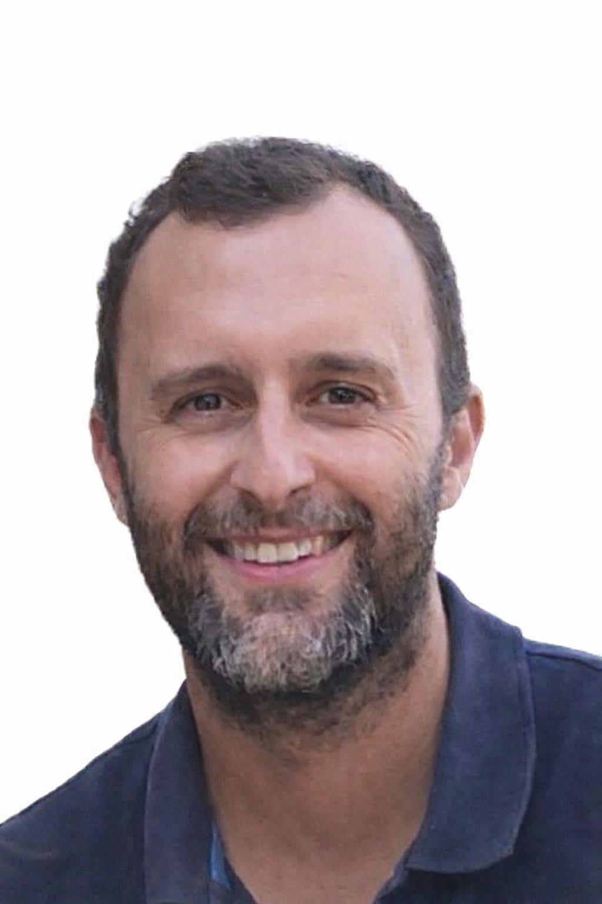
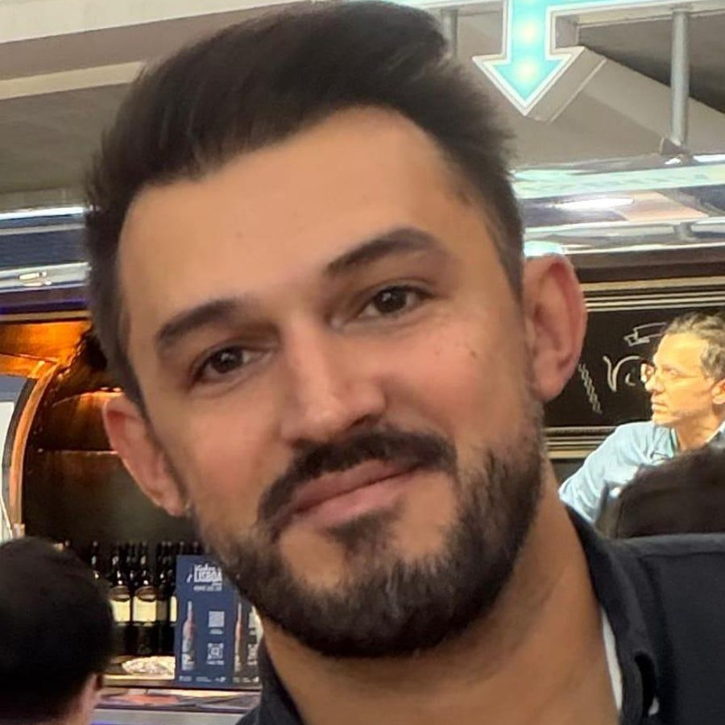
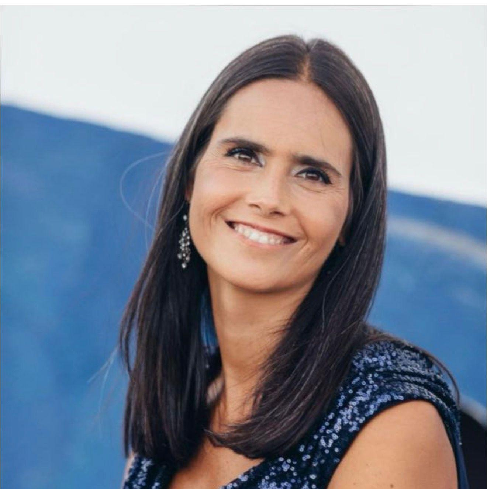
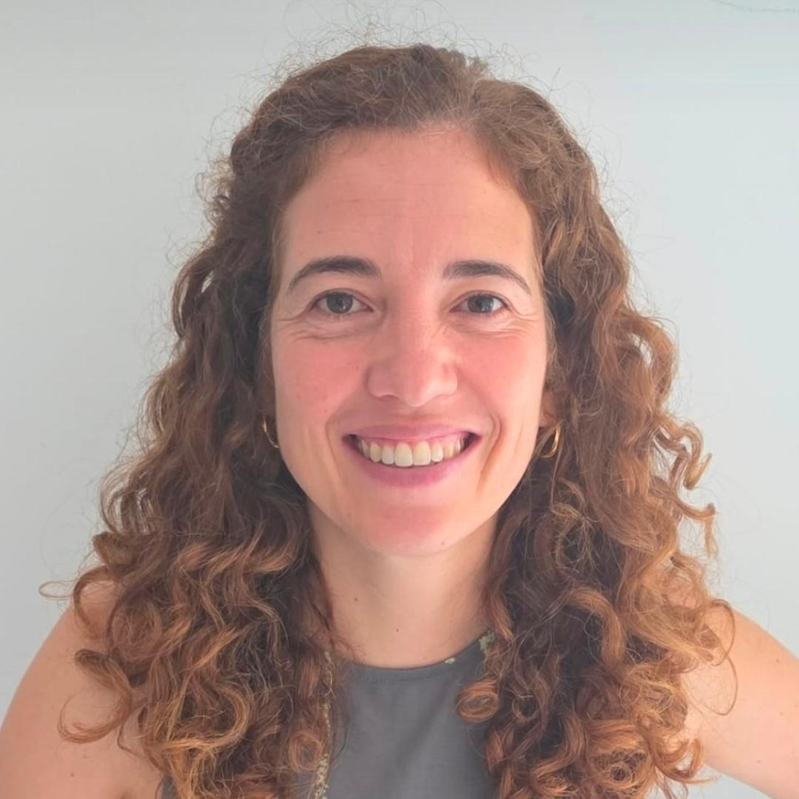
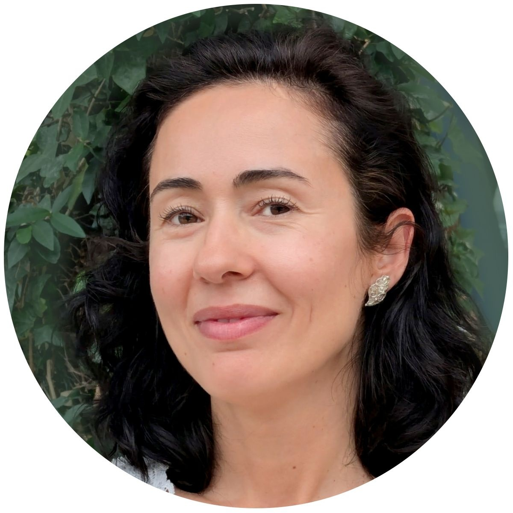
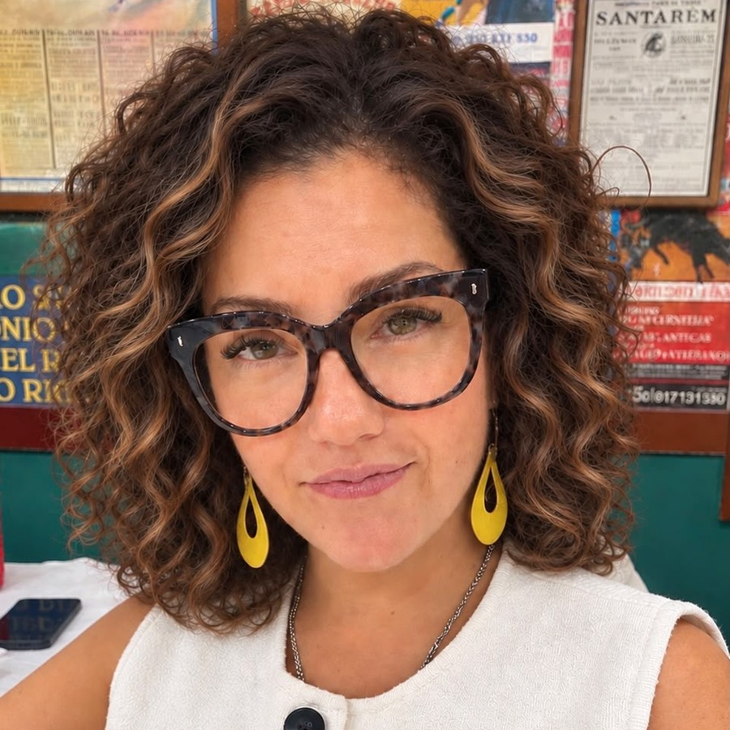
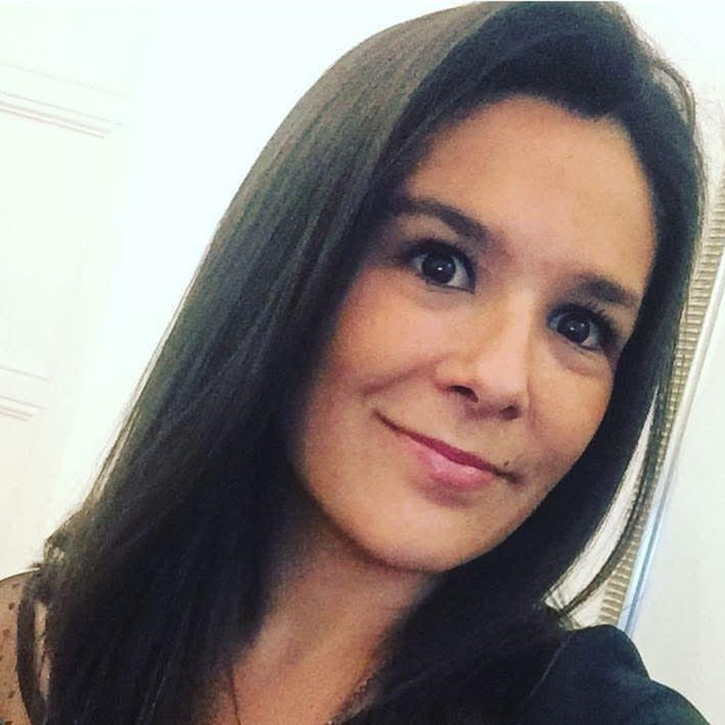

Representar
Ouvir as famílias e transmitir as suas necessidades à comunidade escolar.
Conheça a missão, o papel e as pessoas que dão vida à Associação de Pais.
A Associação de Pais e Encarregados de Educação da EB1 + JI Bairro do Restelo representa as famílias e procura reforçar o diálogo com a comunidade escolar.
Em 2026, a Lista A+ foi eleita. O foco passa agora a ser o trabalho associativo, aberto à participação de todas as famílias.
As eleições de 13 de outubro de 2026 deram a vitória à Lista A+ e a responsabilidade de formar uma nova direção. Esta equipa não é a direção anterior: tem pessoas, propostas e prioridades próprias. Reconhecemos o trabalho de quem nos antecedeu, mas não atribuímos à equipa atual iniciativas ou decisões de mandatos passados.
Representar a comunidade escolar não significa ouvir apenas quem nos apoiou. Respeitamos opiniões contrárias, divergências e críticas construtivas. A diferença de perspetivas ajuda-nos a identificar problemas, corrigir decisões e encontrar soluções melhores para as crianças.
Ouvir as famílias e transmitir as suas necessidades à comunidade escolar.

Trabalhar com escola e parceiros em iniciativas que beneficiem as crianças.

Informar de forma clara e incentivar a participação na vida associativa.
Uma equipa de famílias que assume a responsabilidade de representar e aproximar a comunidade escolar.






Acompanhamento e fiscalização da atividade associativa.

Participação e organização da vida democrática da Associação.


As famílias podem fazer parte desta caminhada, com ideias, sugestões e participação nas atividades.